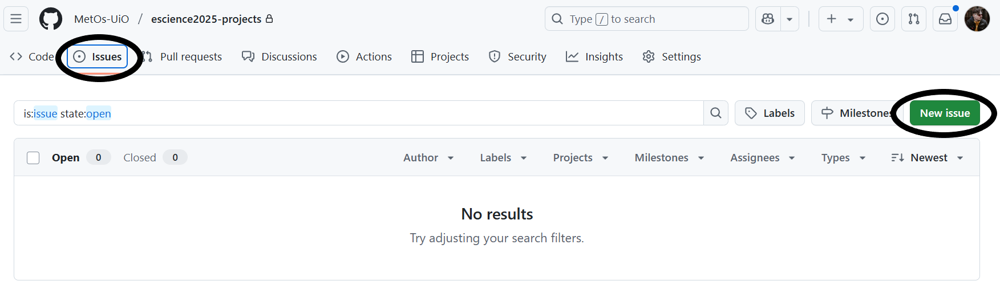
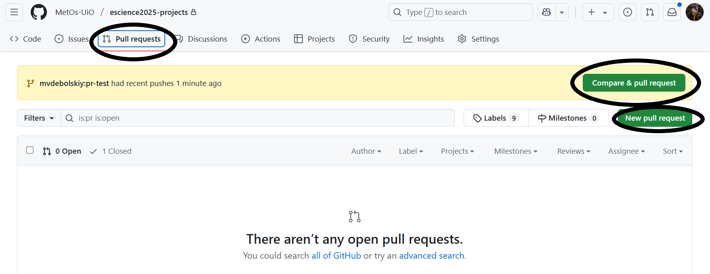
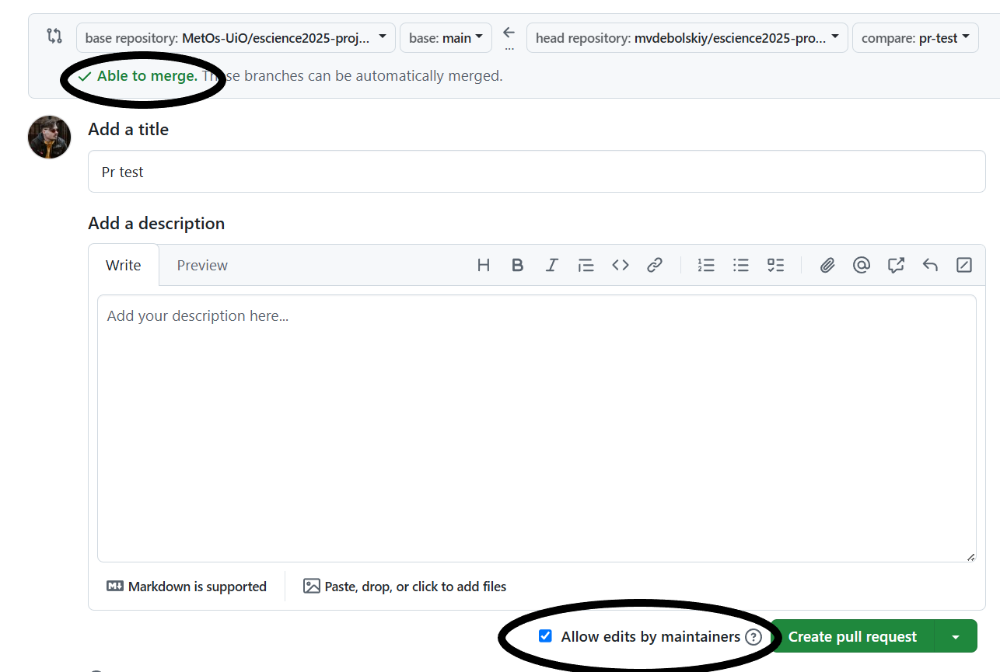
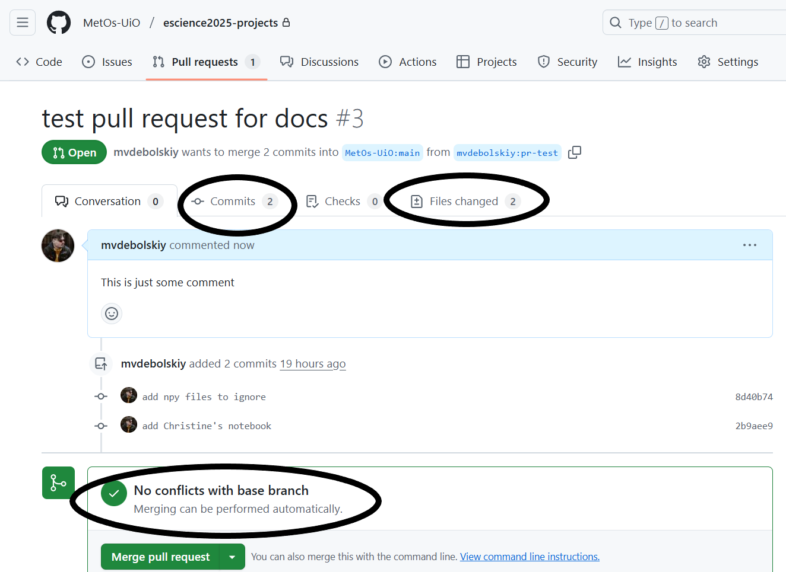

Pull requests and Issues#
Issues#
Let’s say you have found a bug in the code or want to request propose some new functionality for a code that is in some repo on GitHub. A good way to do it is to use Issues to keep the track record.
On the GitHub web-page associated with the repo, you can find an Issues tab.
{kind=link}
There, you will see opened and closed issues, search through them, sort etc. To create a new Issue simply click on New Issue on the right.
{kind=link}
GitHub uses MarkDown with some extra features for formatting comments and messages ont GitHub web-pages. You can read about the basics of formatting on the github documentation.
Pull requests#
When you have developed some code and want other people to use it. For that, you will need to create a Pull Request so that change from your fork get merged into a default branch on upstream. There is a Pull Requests tab near the Issues tab on the GitHub page of your repository. If you click on it, you will get similar page as the one for Issues:
{kind=link}
If your fork had recent commits pushed, github will add a hightlight on the repo page. You can also just click on the New Pull Request. Whichever you do, you will see a promt to choose which branch you are pushing from and which you are pulling into:
{kind=link}
base repository and base correspond to the repo and branch you want your changes to go in.
head repository and compare correspond to the repo and branch you want changes from.
Attention
When submitting a Pull Request, double check that you are pulling the intended branch into intended remote.
After you have chosen correct branches, you will see the comparison between them if you scroll down. To create a Pull Request click on Create pull request. Now you will se a page similar to the one you get when creating a new issue.
{kind=link}
Ideally the branch you are pushing from should have no merge conflicts with the base branch. Also, do not untoggle the Allow edits by maintainers since that will prohibit people to fix your PR if something is wrong with it.
Give your PR a meaningful title and description and check Allow edits by maintainers if you want people responsible for the repo your are pulling into to have access to your branch associated with the PR.
You can also request specific maintainers/users to review you PR (on the right). After you are done, press Create pull request again.
{kind=link}
On the opened PR page you will be able to see all the commits that are different between the base and compare branches, You can also check the differences in files between the two versions. If there are merge confilts in your PR, make a comment and mention @github-username a maintainer to help.